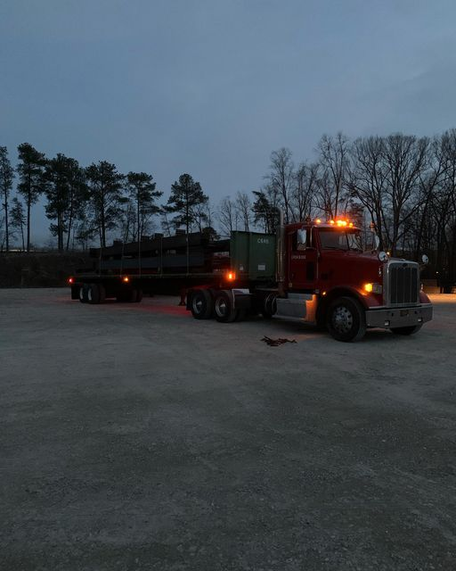

I am a driver
- What I am improving
- 1.Strait back up
- 2.90 Degree back up
- What I can do
- 1.Drop trailer in a designated spot
- 2.Chain and unchain and strap steel
- 3.Using Truck Map
- What I want
- 1. Steady Work load
- 2. Home daily
- My expirence
- 1. Manual stick and auto truck driving
- 2. Pick up truck and trailer from designated place
- 3. Ship amazon dry box trailer in Baltimore,Penn,Delaware area
- 4. Ship Steel with chain from Delaware and maryland to New York
Photo Gallery
